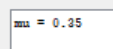
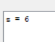
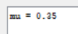
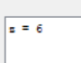
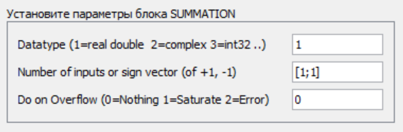
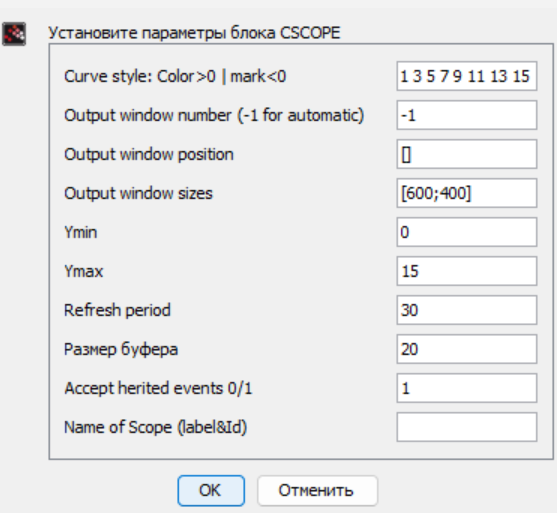
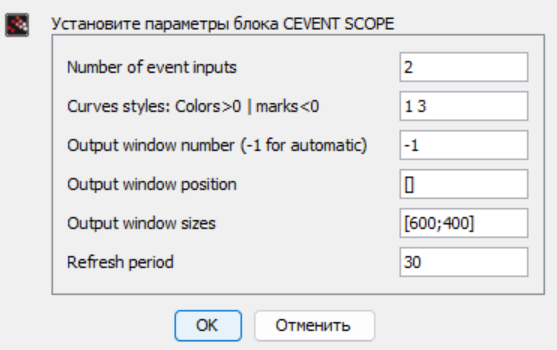

- Извекова Мария Петровна
- студентка 3-го курса
- Российский университет дружбы народов
- 1132226460@pfur.ru

Рассмотреть пример моделирования в xcos системы массового обслуживания типа M|M|1|∞.
Реализовать модель системы массового обслуживания типа M|M|1|∞.
Построить график поступления и обработки заявок;
Построить график динамики размера очереди.
 |  | 
|  | | |  | 
В процессе выполнения данной лабораторной работы я рассмотрела пример моделирования в xcos системы массового обслуживания типа M|M|1|∞.